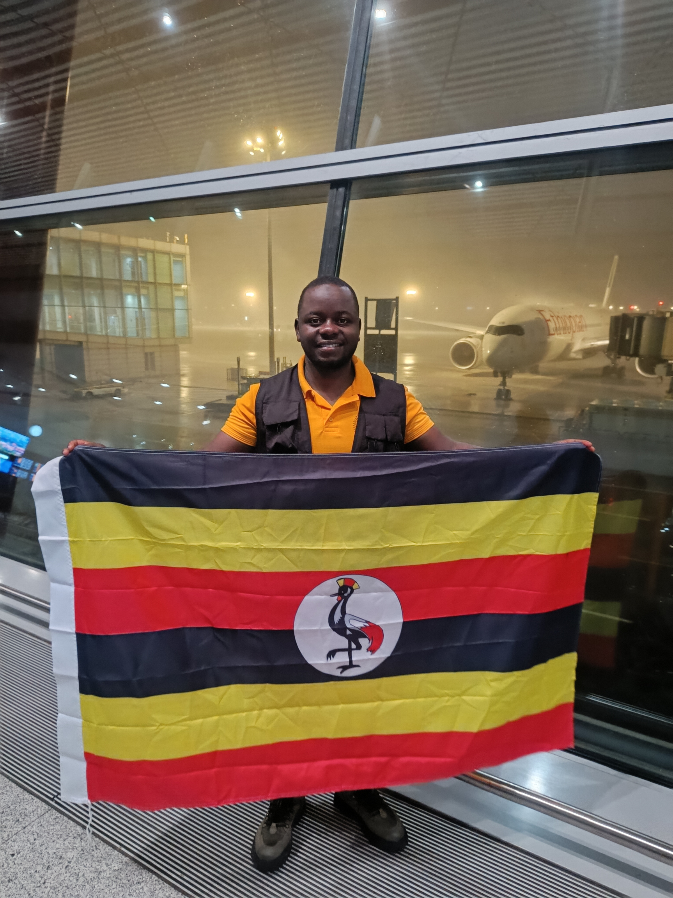

Built locally. Designed professionally. Ready for the world.
Kamwenge Live™ is a modern live broadcasting and interactive meeting platform created to make scheduled community events easy to create, share, watch and participate in from a phone or computer.
The platform brings together live video, scheduled meetings, public event links, audience comments, reactions, screen sharing and broadcaster-controlled recording in one simple experience.
One Event Link
The same public event link can move naturally from an upcoming countdown to LIVE status and finally to an ended event.
Private Broadcasting Studio
Broadcasters manage their camera, microphone and screen sharing inside a private studio while viewers watch through the public event page.
Live Participation
Viewers can participate through comments and reactions, helping create an engaging live-event experience.
Local Recording
Recording is optional and remains under the broadcaster's control. A recording can be saved directly to the broadcaster's own device instead of automatically becoming a public replay.
Technology built from home
Kamwenge Live™ represents a belief that powerful digital platforms do not always have to come from outside Uganda.
The platform is being developed locally with the ambition to solve real community communication needs while applying modern technologies and international software development standards.
Its long-term vision is to demonstrate that locally conceived technology can grow from serving communities such as Kamwenge and Rwamwanja into a platform capable of serving users far beyond its place of origin.

Eng. Amiim Tumwekwase
📍 Nkoma-Katalyeba Town Council, Rwamwanja, Kamwenge, Uganda
Eng. Amiim Tumwekwase is a software engineer with a Master's degree in Software Engineering. His interest is in designing and developing practical digital systems that respond to real community needs.
Kamwenge Live™ grew from his passion for building homegrown technology and demonstrating that communities in Uganda can create their own modern digital platforms rather than depending entirely on foreign-built tools.
The goal is not to reject global technology, but to learn from international platforms, use modern global standards and build solutions that can originate locally, solve local problems and still compete at an international level.
KAMWENGE LIVE ™
Homegrown in Uganda. Built to Compete Globally.
A locally conceived digital broadcasting platform designed with global ambition.